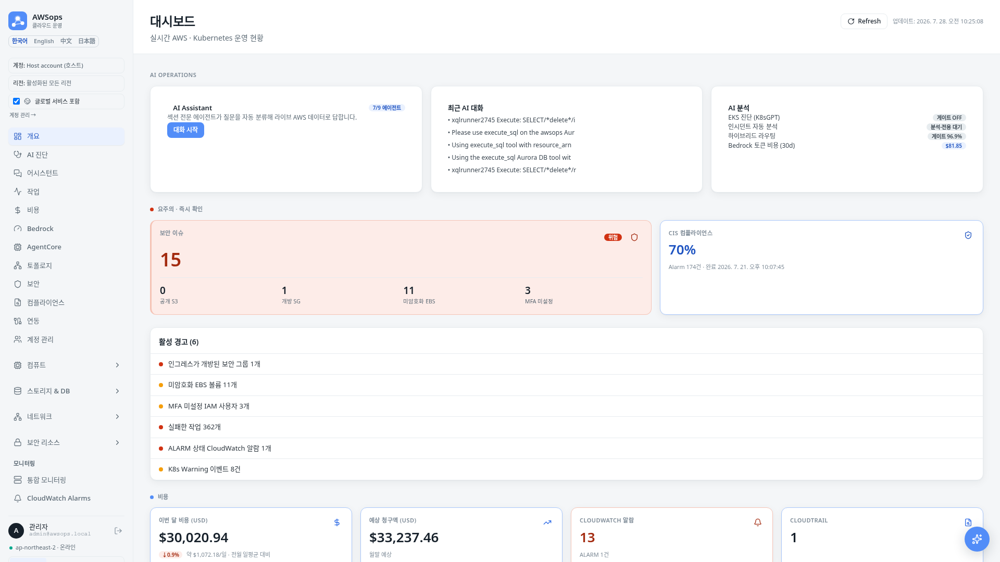
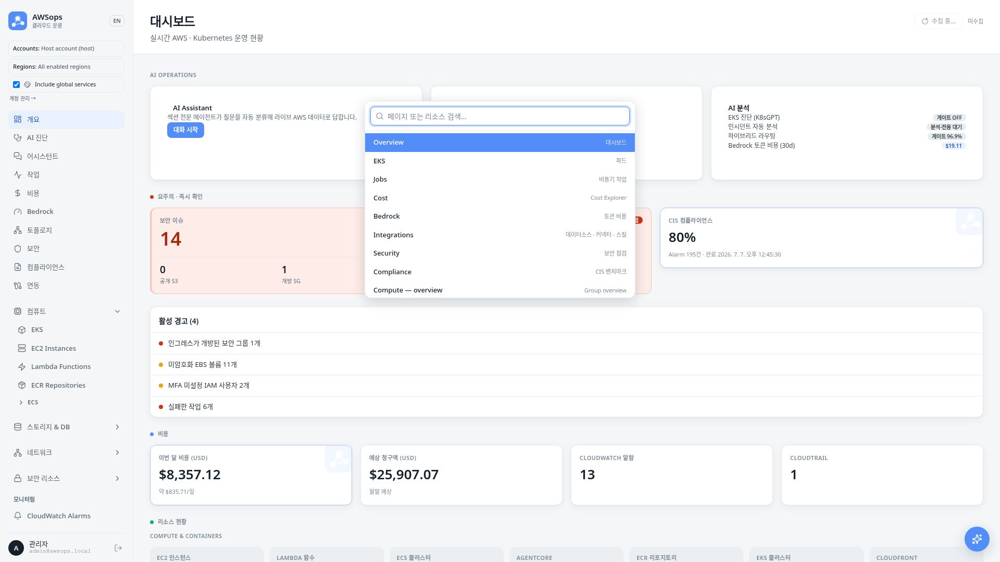

AI-Powered AWS Operations Dashboard
Junseok Oh | Solutions Architect | AWS

| 항목 | 내용 | 설명 |
|---|---|---|
| Infra | Terraform MSA | 비공개 엣지 — CloudFront VPC Origin → 내부 ALB → Fargate |
| Compute | ECS Fargate | web thin-BFF + OOM-safe 비동기 워커 티어 (arm64) |
| Data | Aurora Serverless v2 | PostgreSQL 17 영속 상태 + 41종 인벤토리 sync |
| AI Tools | 9 게이트웨이 설계 (160+ 도구) · 30개 슬라이스 전부 LIVE | AgentCore 섹션 에이전트 (모두 read-only; 9개 게이트웨이 전부 READY MCP 타깃) |
| AI Routing | ADR-003 하이브리드 | regex fast-path + Haiku 분류기, 게이트 96.9% |
| Diagnosis | light·mid 9 / deep 16 섹션 | Well-Architected 매핑, DOCX/PDF 내보내기 |
| UX | 3-테마 + 모바일 + 4개 언어 | 반응형 대시보드 + Cmd-K + 한/영/中/日 i18n |
